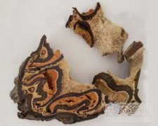

飞天蠄蟧

拼音
Fēi Tiān Qín Liáo
别名
桫椤、刺桫椤、山蠄蟧、山棕、龙骨风、树蕨、大贯众
来源
为桫椤科桫椤属植物桫椤Cyathea spinulosa Wall.，以主干入药。全年可采，削去主干的坚硬外皮，切片晒干。
生境分布
多生于山谷、溪边及林下潮湿地。分布于台湾、广西、广东、四川、贵州、云南等省区。
药材特点
多年生树形蕨类，高3～8米，棕榈状，幼苗似金毛狗脊。主干直立，高1～3米，粗壮，深褐色或浅黑色，外面坚硬，有老叶脱落留下的痕迹；药材断面近圆形，沿边缘有一圈形似新月形的维管束。叶簇生于干顶；叶柄及叶轴密被棘刺；叶片巨大，长1～3米，三回羽裂，羽片矩圆形，长30～50厘米，中部宽13～20厘米，羽轴下面无毛（下部有疏刺），上面连同小羽轴疏生棕色卷曲有节的毛，小羽轴和主脉下面有略呈泡状的鳞片，沿汁脉下面有疏短毛，小羽片羽裂几达小羽轴；裂片披针形，短尖头，有疏锯齿，细脉均为2叉。孢子囊群生于小脉分叉点上凸起的囊拖上，囊群盖近圆球形，膜质，下位，初时向上包被囊群，成熟时裂开，压于囊群下或几消失。
性状
干燥的主干呈圆柱形，直径约12厘米，表面棕色，全体有排列较整齐的叶柄痕；每一叶柄痕近圆形，直径约3～4厘米，下方有凹陷，边缘有多数排列紧密的叶迹维管束，中间亦有叶迹维管束散在。断面中空，周围的维管束排成折叠状，形成隆起的脊和纵沟。质坚硬。
性味
微苦，平。
功能主治
祛风利湿，活血祛瘀，清热止咳。用于风湿关节痛，跌打损伤，慢性支气管炎，肺热咳嗽，肾炎水肿，预防流行性感冒；茎内汁液外搽治癣症。
用法用量
3～5钱；外用茎内汁液搽患处。
化学成分
根含生物碱、黄酮甙、酚类、氨基酸、有机酸、糖类。
药理作用
1：无药理作用数据
摘录
《全国中草药汇编》